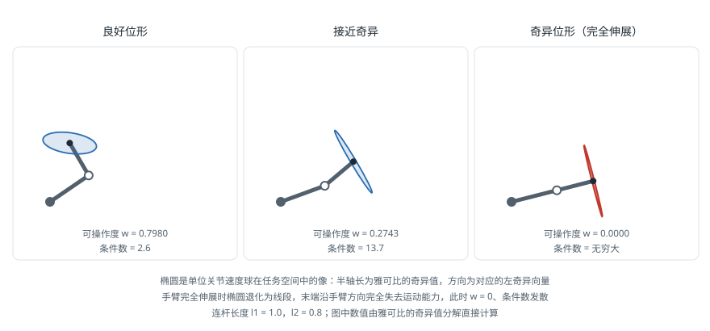

雅可比矩阵与奇异性
引言
雅可比矩阵（Jacobian Matrix）是关节空间与笛卡尔空间之间的桥梁：它把关节速度映射为末端速度，也把末端受力映射为关节力矩。几乎所有需要"在笛卡尔空间下指挥机器人"的算法——速度控制、导纳与阻抗控制、数值逆运动学、力控装配、可操作度优化——都建立在雅可比矩阵之上。理解雅可比的秩何时下降，就理解了机器人为什么会在某些位形失去某个方向的运动能力。
定义
正运动学给出位姿关于关节变量的映射 。对时间求导，由链式法则得：
矩阵 即雅可比矩阵， 为任务空间维度（空间任务通常为 6）， 为关节数。
雅可比是位形相关的：机器人在不同姿态下，同样的关节速度会产生完全不同的末端速度。这是它与线性系统中常数矩阵的根本区别。
末端速度 包含线速度与角速度两部分，相应地雅可比分为两块：
几何雅可比与解析雅可比
几何雅可比
几何雅可比（Geometric Jacobian）直接由机器人的几何结构构造，其角速度部分描述真实的空间角速度向量。对串联机械臂，第 列有简洁的几何意义：
对转动关节：
对移动关节：
其中 是关节 的轴方向（在基座坐标系中表示）， 是关节 上一点的位置， 是末端位置。
这个公式的物理直觉非常清晰：转动关节以角速度 绕轴 转动，会在末端产生大小为 的线速度（ 是从转轴到末端的位置矢量），同时贡献 的角速度；移动关节只贡献线速度，不产生角速度。
由于所有量都能从 正运动学 的中间结果直接读出，几何雅可比可以在一次正运动学遍历中顺带算完，代价极低。
解析雅可比
解析雅可比（Analytical Jacobian）定义为末端位姿参数化表示（如位置加欧拉角）对关节变量的偏导：
其中 是欧拉角。两者通过一个与姿态相关的变换矩阵关联：
关键区别：欧拉角的导数 不等于角速度 ，二者通过 联系，且 在万向节死锁处奇异。这意味着解析雅可比会引入表示奇异（Representation Singularity）——这种奇异不是机器人的物理特性，而是姿态参数化方式的产物。
工程结论：控制与规划一律使用几何雅可比。只有在目标函数直接以欧拉角表述时才用解析雅可比，且需要额外处理表示奇异。
静力学对偶
雅可比不仅描述速度映射，还描述力的映射。由虚功原理（Principle of Virtual Work），末端上的广义力 （力与力矩）与产生它所需的关节力矩 满足功率相等：
由于对任意 成立，得到静力学对偶关系：
这一关系是力控制的理论基础，有两个方向的用途：
- 力控：期望末端输出某个接触力时，用 换算出需要的关节力矩指令
- 力估计：用关节电流估计出的力矩反推末端受力，实现无腕力传感器的碰撞检测与柔顺控制。反解需要 ，在奇异位形附近同样不可靠
注意速度映射与力映射的对偶性：速度的零空间对应力的可承受方向。在奇异位形处机器人失去某个方向的运动能力，恰恰意味着它在该方向可以承受无穷大的外力而不需要关节力矩——夹紧的老虎钳正是利用了这一点。
奇异位形
定义与后果
当雅可比矩阵的秩下降（）时，机器人处于奇异位形（Singularity）。此时：
- 末端失去至少一个方向的瞬时运动能力，无论关节如何运动都无法沿该方向移动
- 逆问题 病态，接近奇异时求得的关节速度趋于无穷
- 逆运动学的多组解在此处合并，穿越奇异点时构型可能突变
- 静力学上，机器人在退化方向上可以承受任意大的外力
第二条是实际系统中最危险的：机器人以恒定末端速度接近奇异位形时，关节速度指令会急剧上升，触发速度限位保护而急停，或者在保护不足时造成剧烈甩动。
三种典型奇异
以六轴球形手腕机械臂为例：
腕部奇异（Wrist Singularity）：关节 5 角度为 0 时，关节 4 与关节 6 的轴线共线，两个自由度退化为一个。末端在绕该共线轴的方向上仍能转动，但 与 的分配不确定；穿越时两者会反向高速旋转（"腕部翻转"）。这是工业现场最常遇到的奇异，也是示教时要求"避免让 J5 过零"的原因。
肘部奇异（Elbow Singularity）：手臂完全伸直，腕心位于肩关节到肘关节的延长线上。此时末端已在工作空间边界，无法继续沿手臂方向外伸。
肩部奇异（Shoulder Singularity）：腕心落在关节 1 的轴线上（通常是机器人正上方或正下方）。此时无论 取何值腕心位置都不变， 不确定；接近时 需要高速旋转以跟踪末端的横向移动。
度量指标
可操作度（Manipulability）由 Yoshikawa 提出，衡量机器人偏离奇异的程度：
其中 是 的奇异值。 即处于奇异位形。几何上 正比于可操作度椭球（Manipulability Ellipsoid）的体积——该椭球是单位关节速度球 在任务空间的像，其半轴长度为 、方向为对应的左奇异向量。椭球在某个方向被压扁，就表示该方向的运动能力弱。
下图以平面两连杆机械臂为例，给出三种位形下的可操作度椭球。手臂从弯曲到伸直的过程中，椭球逐渐被压扁，在完全伸展时退化为一条线段——此时末端沿手臂方向完全失去运动能力：

可操作度的缺点是量纲不一致（混合了长度与角度）且对整体尺度敏感，通常只用于同一机器人不同位形之间的比较。
条件数（Condition Number） 衡量各方向能力的均匀程度， 称为各向同性位形（Isotropic Configuration），是精度最优的位形。 即奇异。
最小奇异值 是最直接的实用指标：它给出末端在最弱方向的速度传递比，可以直接用作阻尼调节与降速的触发量。
处理奇异位形
| 策略 | 做法 | 适用场景 |
|---|---|---|
| 阻尼最小二乘 | 见 逆运动学，用 替代伪逆 | 通用，速度级控制的默认方案 |
| 奇异值滤波 | SVD 分解后把过小的 置零或抬升 | 需要精细控制退化方向时 |
| 任务降维 | 主动放弃退化方向的跟踪，只跟踪可实现的分量 | 姿态精度要求不高的任务 |
| 零空间规避 | 冗余机械臂用零空间运动最大化可操作度 | 7 轴及以上机械臂 |
| 路径规划层规避 | 把 作为规划约束 | 离线规划、示教编程 |
| 关节空间过渡 | 检测到即将穿越奇异时，改用关节空间插值通过该段 | 工业机器人常用的实用手段 |
工业控制器普遍采用的做法是降速通过：监测 ，当其低于阈值时按比例降低末端指令速度，使关节速度保持在限值内。代价是末端不能保持恒定速度，但避免了急停。
代码实现
由正运动学构造几何雅可比
import numpy as np
from forward_kinematics import forward_kinematics, PUMA560_MDH
def geometric_jacobian(q, params=PUMA560_MDH):
"""由各连杆坐标系位姿构造 6xn 几何雅可比（全部为转动关节）
注意改进 DH 约定下坐标系 {i} 的 z 轴即关节 i 的轴线，
因此第 i 列（0 起始，对应关节 i+1）应取 frames[i + 1]。
"""
T_end, frames = forward_kinematics(q, params)
p_e = T_end[:3, 3]
n = len(q)
J = np.zeros((6, n))
for i in range(n):
T_i = frames[i + 1] # 坐标系 {i+1}，其 z 轴为关节 i+1 的轴线
z_i = T_i[:3, 2] # 关节轴方向（基座坐标系下）
p_i = T_i[:3, 3] # 关节轴上一点
J[:3, i] = np.cross(z_i, p_e - p_i)
J[3:, i] = z_i
return J
def manipulability(J):
"""可操作度、条件数与最小奇异值"""
s = np.linalg.svd(J, compute_uv=False)
w = float(np.prod(s))
cond = float(s[0] / s[-1]) if s[-1] > 1e-12 else np.inf
return w, cond, float(s[-1])
数值验证雅可比
手写雅可比极易出错，有限差分是最有效的验证手段：
def numeric_jacobian(fk, q, eps=1e-6):
"""有限差分雅可比，用于验证解析实现"""
from scipy.linalg import logm
n = len(q)
T0 = fk(q)
J = np.zeros((6, n))
for i in range(n):
dq = np.zeros(n)
dq[i] = eps
T1 = fk(q + dq)
J[:3, i] = (T1[:3, 3] - T0[:3, 3]) / eps
dR = T1[:3, :3] @ T0[:3, :3].T
so3 = logm(dR).real
J[3:, i] = np.array([so3[2, 1], so3[0, 2], so3[1, 0]]) / eps
return J
if __name__ == '__main__':
q = np.array([0.2, -0.7, 0.9, 0.3, 0.5, -0.4])
J_geo = geometric_jacobian(q)
J_num = numeric_jacobian(lambda x: forward_kinematics(x)[0], q)
print('最大偏差:', np.abs(J_geo - J_num).max())
w, cond, s_min = manipulability(J_geo)
print(f'可操作度 w = {w:.6f}, 条件数 = {cond:.2f}, sigma_min = {s_min:.6f}')
# 腕部奇异：theta5 = 0
q_sing = np.array([0.2, -0.7, 0.9, 0.3, 0.0, -0.4])
w_s, cond_s, s_min_s = manipulability(geometric_jacobian(q_sing))
print(f'腕部奇异处 w = {w_s:.2e}, 条件数 = {cond_s:.2e}')
笛卡尔速度控制（导纳形式）
def cartesian_velocity_control(q, v_desired, jac_fn,
dq_max, lam=0.05, sigma_thresh=0.02):
"""把期望末端速度转换为关节速度指令，带奇异降速保护"""
J = jac_fn(q)
s = np.linalg.svd(J, compute_uv=False)
sigma_min = s[-1]
# 接近奇异时按比例降低末端速度指令
scale = min(1.0, sigma_min / sigma_thresh) if sigma_thresh > 0 else 1.0
v_cmd = v_desired * scale
# 阻尼最小二乘求解关节速度
dq = J.T @ np.linalg.solve(J @ J.T + lam ** 2 * np.eye(6), v_cmd)
# 统一缩放以满足关节速度限制，保持运动方向不变
ratio = np.max(np.abs(dq) / dq_max)
if ratio > 1.0:
dq /= ratio
return dq, scale
统一缩放而非逐关节钳位是关键细节：逐关节钳位会改变关节速度矢量的方向，从而使末端偏离期望的运动方向；统一缩放只降低速度大小，路径保持不变。
与其他主题的联系
- 逆运动学：所有数值 IK 方法本质上都是对雅可比做局部求逆并迭代
- 机器人动力学：雅可比出现在操作空间动力学方程中，操作空间惯量矩阵为
- 控制：阻抗控制与导纳控制通过 在关节力矩层实现笛卡尔空间的期望阻抗
- 运动规划：可操作度可作为轨迹优化的代价项，引导规划器远离奇异区域
参考资料
- Craig, J. J. (2005). Introduction to Robotics: Mechanics and Control (3rd ed.). Pearson Prentice Hall. — 第 5 章讲解雅可比与静力学。
- Yoshikawa, T. (1985). Manipulability of Robotic Mechanisms. International Journal of Robotics Research, 4(2), 3-9. — 可操作度概念的原始论文。
- Siciliano, B., Sciavicco, L., Villani, L. & Oriolo, G. (2010). Robotics: Modelling, Planning and Control. Springer. — 第 3 章系统讨论微分运动学与奇异性。
- Chiaverini, S. (1997). Singularity-Robust Task-Priority Redundancy Resolution for Real-Time Kinematic Control of Robot Manipulators. IEEE Transactions on Robotics and Automation, 13(3), 398-410.
- Lynch, K. M. & Park, F. C. (2017). Modern Robotics. Cambridge University Press. — 第 5 章以旋量方法推导雅可比。
- Khatib, O. (1987). A Unified Approach for Motion and Force Control of Robot Manipulators: The Operational Space Formulation. IEEE Journal of Robotics and Automation, 3(1), 43-53.